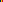
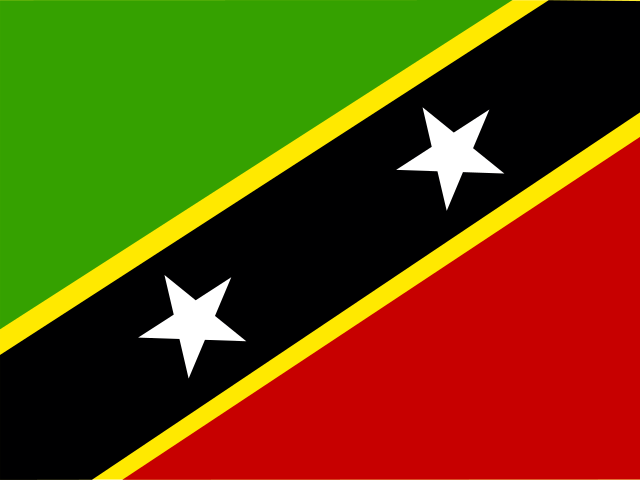
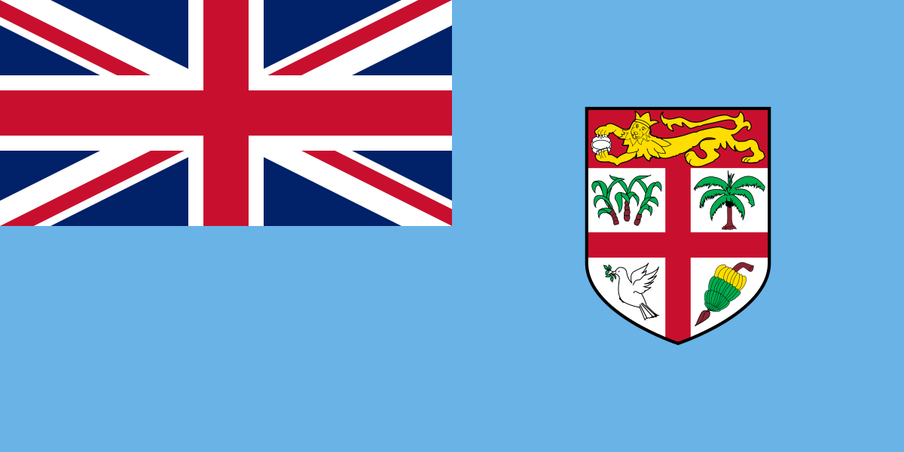
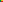
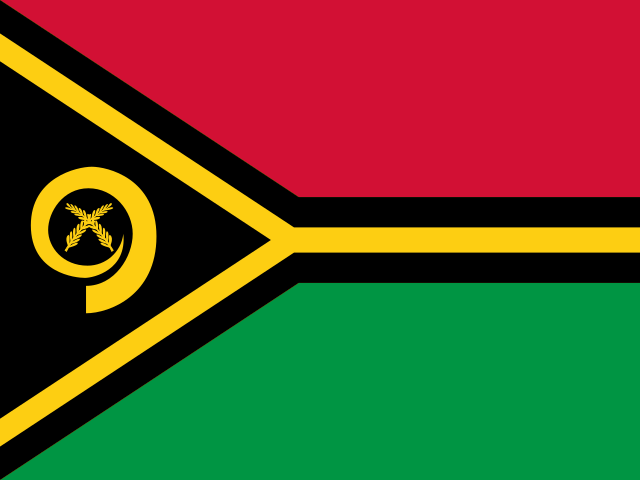
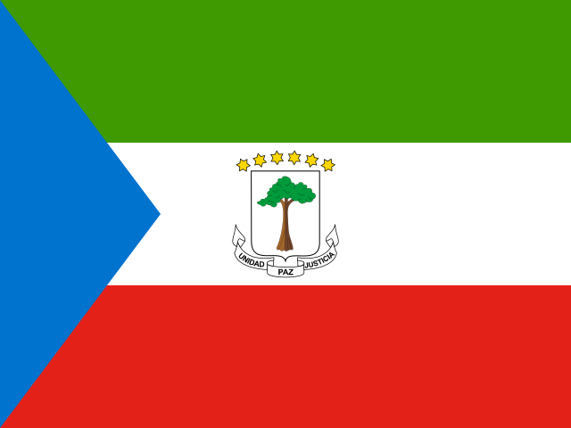

Q7

Chad
N'Djamena
Flag: AssistedCapital: Independent
Flag needed clue after Romania confusion.
Exact canonical flag assets used in your Edition 2 game.
11 unique countries · 7 Assisted Flags · 4 Assisted Capitals · 2 Wrong Capitals · 0 Wrong Flags.

Flag needed clue after Romania confusion.

Flag needed clue Ki...

Capital finished on assisted path.
Both flag and capital needed help.

Flag needed clue.

Both components recorded Assisted by user-referee ruling.

Flag needed help after wrong country guesses.

Flag needed clue Ma...

Capital unresolved after clue Po...

Capital unresolved after clue Ma...

Saint Jones → Saint George → Georetown → clue Bri... → Bridgetwon.